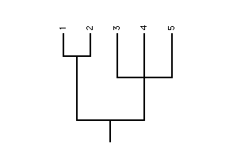

RadCon is a program for manipulating and analysing phylogenetic trees - graph structures that represent the pattern of evolution.
A phylogenetic tree consists of a set of nodes which are connected by a set of branches
The degree of a node is the number of branches connected to it.
Nodes of degree 1, i.e., those that occur at the tips of the tree, are referred to as leaves or terminal nodes. Each leaf represents a species. All other nodes, which must be of degree 3 or greater and are referred to as internal nodes, represent cladogenetic evolution- the division of one parent species into two or more descendant species.

Branches represent anagenetic evolution - change within a single species. Branches which connect to the leaves (or terminal nodes) are known as terminal branches. All other branches are called internal branches.
An internal node of degree 3 represents the splitting (-furcation) of one species into two (bi-) and is known as a bifurcation. A tree is bifurcating if all its internal nodes are of degree 3. Internal nodes of degree greater than 3 are referred to as polytomies. A tree with with a single internal node is called a bush.
It is assumed that the underlying pattern of evolution is bifurcating. Consequently, polytomies are considered to represent uncertainty as opposed to a multiple speciation events, i.e., the simultaneous splitting of a parent species into multiple descendant species. Hence bushes are considered uninformative as they fail to reduce uncertainty.
The root of a tree is the internal node representing the speciation event which occurred earliest in evolutionary time. A tree is rooted if its root is known otherwise it is said to be unrooted. The root is important because its identification allows the direction of evolution to be determined.
In phylograms, and some other types of phylogenetic tree, the actual length of the branches is significant and indicates the length of time over which the change (anagenetic evolution) took place or the amount of change. Cladograms, on the other hand, are phylogenetic trees in which the actual length of the branches is irrelevant. Cladograms only convey information about the pattern of branching or splitting (note: RadCon ignores branch lengths and treats all trees as if they are cladograms).
It is an assumption of phylogenetic reconstruction that individual leaves are evolutionarily separate. Hence the presence of terminal branches is assumed and they provide no cladisitic information, i.e., they do not reduce uncertainty regarding splitting. Internal branches, on the other hand, prohibit some of the possible arrangements and are cladistically informative.
A tree can be decomposed into a set of less inclusive (smaller) phylogenetic structures - an approach utilised by various consensus methods and tree comparison measures.
One such structure is a split - a partition of a set of leaves into two non-empty subsets.
A split is rooted if the direction of evolution is specified otherwise it is unrooted.
Each branch in a tree corresponds to a split on the leaves in that tree. A split corresponding to a terminal branch is uninformative as it does not reduce phylogenetic uncertainty. This is because the evolutionary separation of the leaf, at the tip of the terminal branch, from the other leaves in the tree is an assumption of the analysis, i.e., it is taken as given that the species (leaves) are evolutionarily distinct. On the other hand, a split corresponding to an internal branch is informative some of the possible phylogenetic relationships and reduces uncertainty.
A branch in a tree corresponds to a split on all the leaves under consideration (in the tree) and is referred to as a full split to distinguish it from a partial split - a split on a subset of the leaves under consideration.
The smallest possible informative rooted split is on three leaves and is called a resolved triplet whilst the smallest possible informative unrooted split is on four leaves and is called a resolved quartet.
A nesting is a statement that the most recent common ancestor of one set of leaves is a proper descendant of the most recent common ancestor of another set (Adams, 1986).
Phylogenetic inference is the process of constructing the phylogenetic tree(s) which best represents the evolutionary history of the set of species under consideration. Multiple alternative phylogenetic trees are constructed when there are alternative conflicting phylogenetic signals in the observed data.
Parsimony is a method of phylogenetic inference which considers the most representative phylogeny(s) to be that which minimises the number of evolutionary changes required to explain the observed data. Maximum likelihood is a second method which considers the most representative phylogeny(s) to be that which is the most likely to have produced the observed data given a specified model of the evolutionary process.
In order to be useful a phylogenetic tree must be accurate, i.e., represent the actual pattern of evolution. Thus it is important that phylogeneticists determine the confidence that can be placed in their trees.
The two most popular methods of assessing the support for phylogenetic relationships are the bootstrap and decay index.
The bootstrap (Felsenstein, 1985) is a method for assessing the stability of, or support for, phlyogenetic conclusions. The method involves the perturbation of the observed data through a process of 'resampling with replacement' to produce a large number (typically 100-1000) of modified data sets which are analysed separately. The resulting inferred phylogenies are then combined to produce a set of bootstrap trees. If a phylogenetic hypothesis is stable one would expect it to be largely unaffected by the perturbation process and to occur in a large proportion of the bootstrap trees. The bootstrap proportion (BP) of a phylogenetic hypothesis is, as it's name suggests, the proportion of bootstrap trees containing the hypothesis.
Phylogeneticists who have used the bootstrap to assess the stability of their results have typically only determined the BPs of the internal branches (full splits) in their trees. However, considering only full splits can be misleading as even though all the full splits may have low BPs many partial splits may be well supported by the data (Wilkinson, 1996).
RadCon provides the user with three bootstrap based measures of leaf stability.
Another method for assessing the support for phylogenetic hypotheses is the Decay Index (DI) which also called the Bremer Support value after it's developer (Bremer, 1988). The Decay Index of a phylogenetic hypothesis is the length of the shortest tree(s) not containing the hypothesis minus the length of the shortest tree(s) containing it. Thus all the hypotheses common to all the MPTs have positive DIs. And the greater the increase in length (more steps) required to overturn a hypothesis then the greater its DI. DI provides a parsimony-based non-normalised (index is a misnomer here!), unbounded (within the limits of the dataset, of course) measure of the support for particular hypotheses. It should be noted that there is no reason why DI could not be calculated for optimality criterion other than parsimony, such as Maximum Likelihood (ML). (Although it should be noted that RadCon currently only handles length differences which are whole numbers which rules out the possibility of using ML as the optimality criterion.)
Typically phylogeneticists have only calculated the DIs of full splits (exceptions include Dyke and Thorley, 1998 and Wilkinson etal., 2000). But there is no reason why the DIs of smaller hypotheses such as triplets and quartets should not be calculated (Wilkinson etal., 2000). This is precisely what RadCon allows the phylogeneticist to do with it's Leaf Stability (Decay Index) and Double Decay Analysis options.
Go to the Table of Contents.
This page is maintained by joe@poissonconsulting.ca
© Copyright 1999, 2000, 2001, Joseph L. Thorley and Mark Wilkinson. All rights reserved.